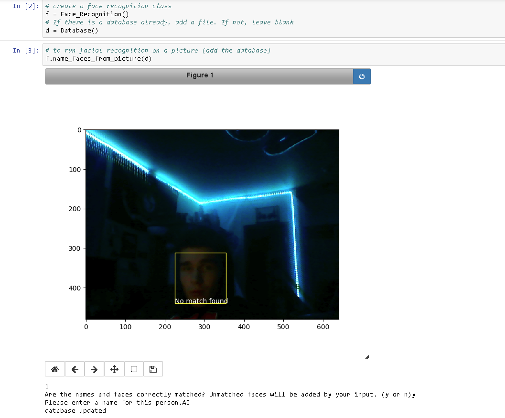
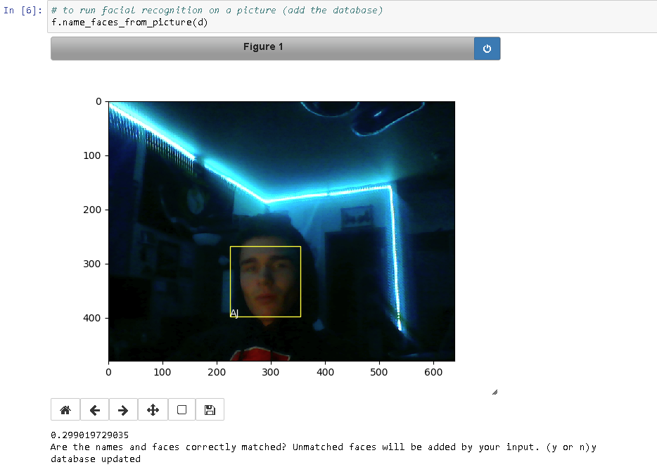
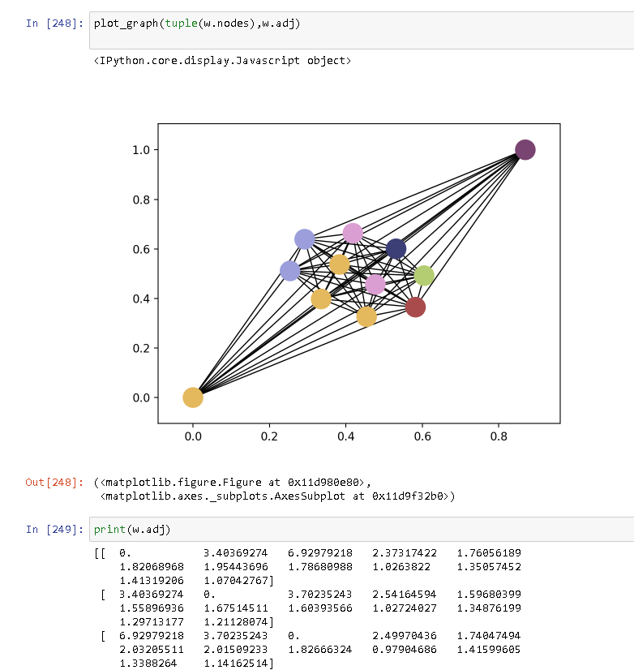
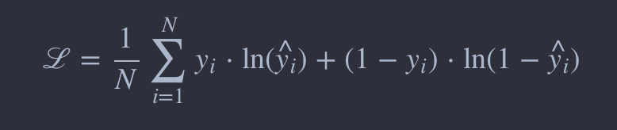
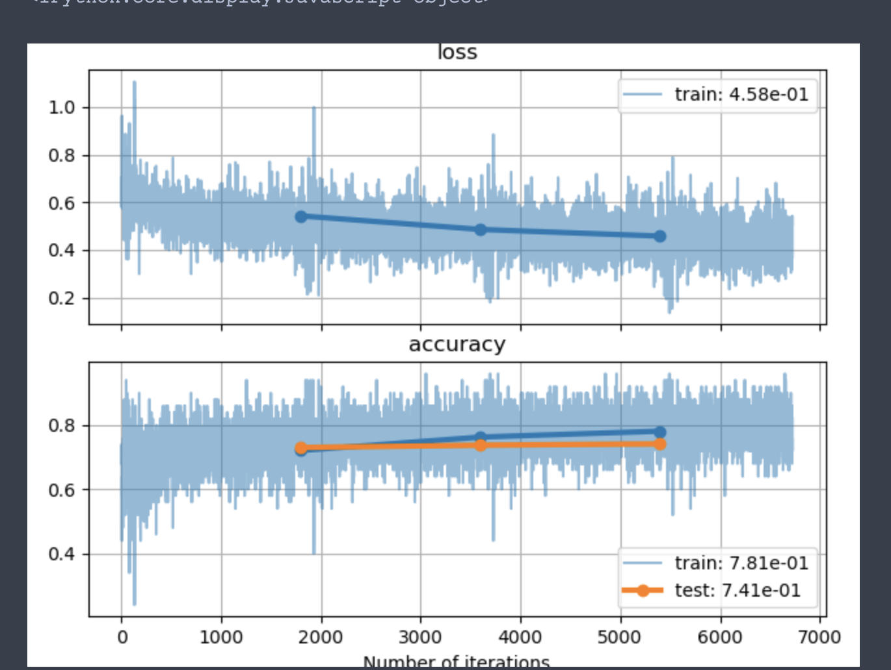

During the summer before my senior year in highschool, I worked on a capstone project at MIT for the Amazon Alexa, implementing Neural networks for facial recognition, voice recognition, and natural language processing. The slightly unfinished project can be found under my GitHub under the title numberWon. This section is going to be dedicated to the facial recognition portion.

As you can tell from the code above, I am creating objects of both the FaceRec and Database classes. The Database class is simply just an implementation of dictionaries in a way that they can be stored, accessed, and saved in a wide array of formats. For example, data about images, the images themselves, and even objects get stored in the database across all of the different projects from Facial Recognition to a reddit news scraper. The FaceRec class is more complicated and relies on pretrained models (dlib) for feature detection. Throughout my time on the project I wrote many neural networks, but I chose to go with a library for my final project just because it simply would've taken to long to go from a 2/3 layer NN to a 20+ layer one. On top of this, it requires an abundance of data (faces), which I did not have access to. Now, to get into what is happening in the screenshot above. The database starts as empty since no pre-existing one gets loaded in, and so when the function name_faces_from_picture gets called, it finds all of the faces in the current picture and sets their names and data as new values. As you can see, it recognized that a face was present but asked for my name since it couldn't find any information on me in the database. Furthermore, the 1 that gets printed out is the smallst euclidean distance between the face found and any other faces stored. 1 is the default value, and so it makes sense that it was returned as there were no faces in the database to be compared to. If the database was pre-loaded in, it would try to match any found faces to pre-exisitng ones, which we see in the next screenshot.

Now, after we run the same code again, there is a face stored in the database from already running the code once. This time, the program recognized who I am from the previous data it has on me. This is possible by taking the smallest euclidean distance between the important features of a picture (eyes, nose, mouth) less than a certain threshold so that two faces don't automatically match if they are the only two available. This program works even when its dark!

Finally, sort of in a different direction is an algorithm known as the 'whispers' or 'chinese-whispers' program that is useful for clustering. This is extremely useful and can be seen as a current application within the field of facial recognition. On the iphone, the photos app sorts photos by who is in them, which is essentially what running a whispers algorithm on image data will return. The premise of this algorithm is two cluster data into distinct groups. Each image in our case can be thought of a node, or a point in space. Each point is connected to specific other points (not all!) based on a euclidean distance thats within a certain threshold. Then, nodes are randomly chosen and its weighted edges are added up. Instead of counting up how many of each other kind of node the node in question is attached to, we will count up some sort of weighted value for each kind of node based on proximity. In other words, if the node in question is very close to two nodes of one kind, and further from two nodes of another kind but still connected, the node in question will be more similar to the first group. Then, the node will then become a part of the group it is most similar to and this process will continue until the number of groups converges, resulting in the truly distinctive groupings. Above is a visiaulization of sorts.
My goal for this upcoming project is to write an AI to master not any old game, but a Tower Defense game that I am currently a part of a team of developers for making. However the game itself is still in its earlier stages and so this project will most likely not take fruition for a while to come.
This has been one of my most complex yet rewarding projects. Unfortunately, because I created the model as well as the tutorial while under contract at MIT, the content is not mine to distribute, and is under a private repo on Github.
The task can be found here: Basically, given a messy dataset (tweets are full of slang, hashtags, and @username mentions), the goal is to classify each tweet as positive, negative, or neutral sentiment.
In order to work with text, a common method is to convert a sentence into some numerical mapping, usually where one word corresponds to a sequence of numbers. These values are known as word embeddings and there are many ways to come up with these. One way is to randomly initialize a vector of numbers for each word and update them by using an embedding layer in some sort of ML model. A second way is to use a matrix that is NxN where N is some vocabulary size. Say our vocabulary cosists of [Cat, Dog, The] and our data are these three sentences.
The dog cat.
Cat the dog.
Cat dog the.
We then look at the distance between each word and every other word. We see that the and cat both appear once in the first sentence and are at a distance of two words. A value of 1/2 would then be added at [the, cat] index of our matrix. This process would continue for thousands of words and thousands of sentences. Now, while that process works rather well, text data isn't the smallest and so sometimes it is best to download one that has already been created as it often times is compiled with better data than you would have when creating your own.
Now, with each sentence in the form of a matrix (a combination of row vectors since each word is just a vector) we can run them through a CNN model. There were a few critical details about the model that created a night and day perfomance different that I won't get into here, but if you're interested in trying a similar project feel free to contact me via my contact me page.

Finally, cross-entropy loss was used and below are the results. After only two epochs of training and an imperfect method for cleaning data (in order to allow for students to improve on this model) this model would be in the top 3 of all submissions for this project. With minor tweaks that the students were encouraged to explore, the model topped 80% accuracy, well past the top submission using a simple model and a simple pure python autograd library, mygrad, which can be found on github.
